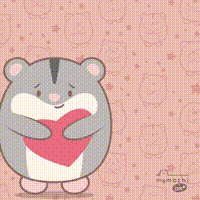

❤︎
To: Cori
Cori aku pertama bertemu dengan mu di kelas 7 dan aku langsung
terpikat oleh senyum manismu, kurang lebih 5 tahun lalu ntah kau
menyadarinya atau tidak aku jatuh cinta pada mu untuk pertama
kalinya.
Perlu 5 tahun bagiku untuk memberanikan menuliskan surat ini.
Ku harap semua isi hati ku dapat ku tulis di dalam surat ini.
Saat kelas 9 ada suatu kejadian yang membuat satu kelas dan kau
mengetahui perasaan yang ku pendam. Sejak kejadian itu aku merasa
malu atau tidak enak kepadamu karena aku merasa diri ku tidak
cocok dengan mu.
Itulah yang membuatku menghindar atau pergi saat ada kau di
dekatku.
Tapi kali ini aku sudah tidak tahan memendam perasaan yang sudah
sangat lama ingin ku katakan ini.
Aku memberanikan diri untuk menyatakan perasaan ku pada mu.
Aku memutuskan membuat ini untuk menyatakan perasaan yang telah
lama ku pendam itu di dalam web ini.
Alasan aku memilih membuat web ini daripada mengatakan perasaan
ku langsung kepadamu karena ini adalah hobiku.
Aku berpikir lebih baik jika aku menyatakan perasaan ku padamu
dalam bentuk hobiku jadi hobiku terisi dan perasaan ku
tersampaikan kepadamu.
Web ini ku buat dengan penuh rasa cinta. Tidak hanya sekedar
template atau meminta bantuan AI karena aku ingin menyampaikan
perasaan cintaku secara murni.
Aku berusaha memahami bahasa pemrograman baru, tag-tag
pemrograman baru dan masih banyak lagi.
Web ini kubuat untuk menyatakan rasa cintaku kepadamu dan
meminta maaf pada mu atas apa yang terjadi saat kelas 9 dulu.
Aku masih merasa tidak enak kepadamu karena aku menyimpan
banyak foto mu dari screenshot story sampai foto kelas yang ku
crop sampai tersisa wajahmu saja.
Aku ingin meminta maaf kepadamu dan ku harap kau mau
memaafkanku.
Alasan aku menyimpan foto-foto mu karena tiap aku melihat
senyummu aku selalu terpukau.
Maaf yaa.
Sepertinya itu saja yang ingin aku ucapkan.
Semoga kau suka dengan web buatan ku.
Kalau bisa suka sama yang buatnya juga yaaa.
Ada satu hal yang ingin aku tanyakan padamu.
Coba kamu tekan lanjut di bawah.
To: Cori
Cori Do you Love me too?
